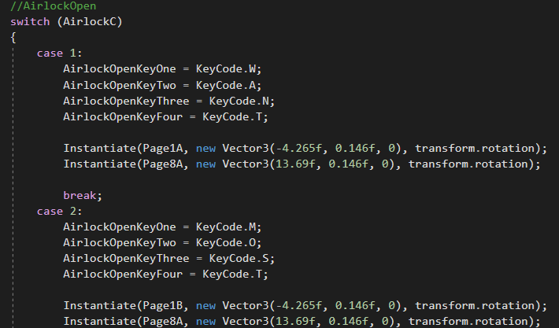

The GMTK GameJam 2020
The theme for the GameMakersToolKit GameJam 2020 was 'out of control' so me and a friend worked on creating a game where the controls change everytime. The game is a mix of manning a spaceship, making sure to put out fires (both litterally and metaphorically) and reading the instruction manual to learn how to put out said fires.
As this game is about randomizing controls the obvious place to start is the handling of said randomization. For each task (of which there are 8) the controls must be changed in the start function. For each task there are 4 possible control schemes it can be chosen to control it so a random number is selected for each task and that is used to select the control scheme for the duration of the game. The reason The game chooses one out of a set of predetermined control schemes instead of being completely random is so that each task can have a certain theme to it. For this task the user is required to type in a four letter word and the word is randomized, in other tasks the user may be asked to input a row of keys and the required row is randomized to keep a shared theme for each task between games. As well as the controls being randomized the pages of the instructions need to be set acordingly, this is done at the end of each case as the randomness is already generated and it will only occur once as it is in the start function. As you can see on the right the variables that contain the keycodes that are randomly selected at the begining of
the game and used for the control input when playing the game. As this task requires typing a word out, each time a correct letter is pressed a varible in incrimented which is used to check which letter can be input next as well as validating when the word is fully complete. When any task is complete a varible is changed to an integer corresponding to what task was completed and whenever this variable changes, a section of code activated that completes the necessary action to finish things like validation and animation.
The way that tasks are validated at the end may seem strange but it is necessary in order for the control swapping to work. Each task has a different method of inputting, a different number of required inputs and a different set of inputs that could be selected, due to all of these factors, swapping the controls for each task would be a very inefficient task. Instead of swapping the controls what we can do instead is swap what the controls for each task output, as mentioned above, when a task is completed the TaskComplete is set to be the corresponding variable of said task. In the example on the right task 1 and task 2 are swapped so we simply swap the values of their corresponding setter variables instead. To follow this example further, if someone were to follow the steps in the code above and type out WANT, when TaskComplete changed it would register as task two being completed and vice versa would happen if the second task was completed.
I feel like it is worth mentioning that unlike many other projects on this site this game wasn't fully completed as it was build during a GameJam. Although it serves more of a proof of concept than a fully functioning game as it is missing a few key features like a game over screen, I am happy with what I managed to achive and the problems I managed to solve during this project.